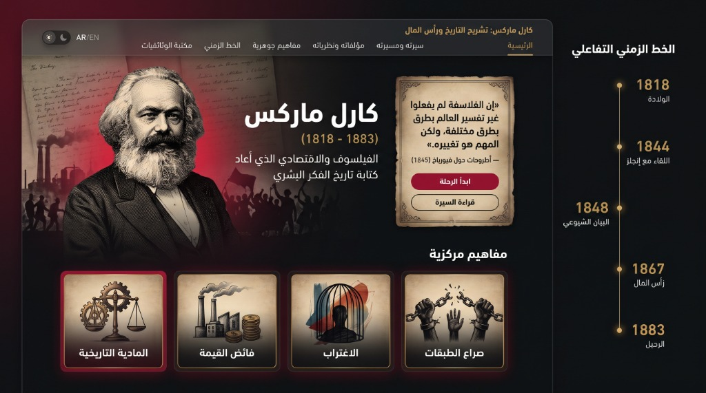

كارل ماركس (1818 – 1883)
فيلسوف واقتصادي وصحفي ثوري ألماني
لم يكن مجرد باحث في برج عاجي، بل كرّس حياته لتشريح آليات النظام الرأسمالي وفهم القوانين الاقتصادية والاجتماعية التي تحرك حركة التاريخ البشري. شكلت كتاباته وتحليلاته النقدية أحد أكثر المشاريع الفكرية تأثيراً في القرنين التاسع عشر والعشرين، ولا تزال مفاهيمه تُناقش وتُختبر في علم الاجتماع والاقتصاد المعاصر حتى اليوم.
«إن الفلاسفة لم يفعلوا غير تفسير العالم بطرق مختلفة، ولكن المهم هو تغييره.» — أطروحات حول فيورباخ (1845)
مفاهيم مركزية
المادية التاريخية
Historical Materialismفائض القيمة
Surplus Value / Mehrwertالاغتراب
Alienation / Entfremdungصراع الطبقات
Class Struggle / Klassenkampfالسيرة والمسار الحياتي
محطات حافلة بين المنافي الأوروبية، الكفاح الفكري، والملاحقة السياسية في سبيل تفكيك قوانين حركة المجتمع البشري.
النشأة والبدايات الأكاديمية (ترير وبرلين)
وُلد في ترير البروسية لأسرة من الطبقة الوسطى. درس القانون في بون ثم الفلسفة والتاريخ في برلين. انضم لحلقة "الهيغليين الشبان" وتأثر بالجدل الهيغلي قبل نقده وتحويله من المثالية المجردة إلى الواقع المادي.
شراكة العمر مع فريدريك إنجلز (باريس 1844)
بعد مصادرة صحيفته السياسية، غادر لباريس والتقى برفيق دربه إنجلز؛ لتنشأ أعمق شراكة فكرية وإنسانية في التاريخ الحديث حيث دعمه إنجلز فكرياً ونقدياً ومادياً لمواصلة أبحاثه.
سنوات المنفى وشظف العيش (لندن)
طُرد من فرنسا وبلجيكا وبروسيا، فاستقر لاجئاً مجرداً من الجنسية في لندن عام 1849. عاشت عائلته في فقر مدقع بحي سوهو، وفقد أطفالاً بسبب المرض وشح الموارد، بينما كان يقضي نهاره في غرفة القراءة بالمتحف البريطاني يدوّن أبحاثه الاقتصادية.
النشاط العمالي والرحيل
ساهم في تأسيس "جمعية الشغيلة العالمية" (الأممية الأولى) عام 1864. توفي بمركبته في 14 مارس 1883 ودُفن في مقبرة هايغيت بلندن بحضور قلة من رفاقه، قبل أن ينتشر أثره في كل قارات الأرض.
أهم المؤلفات والنظريات
ثلاثية تأسيسية أعادت صياغة فلسفة التاريخ، وفككت بنية الإنتاج الرأسمالي المعاصر.
البيان الشيوعي (1848)
صاغه ماركس وإنجلز عشية ثورات أوروبا؛ ليرسم ملامح الصراع الطبقي بين البرجوازية والبروليتاريا بعبارته: «إن تاريخ كل مجتمع إلى يومنا هذا لم يكن سوى تاريخ صراع الطبقات».
رأس المال: نقد الاقتصاد السياسي (المجلد الأول 1867)
دراسته الاقتصادية الأضخم التي فككت بدقة مفهوم السلعة، القيمة التبادلية، وأصل استخلاص الربح من قوة العمل (تولى إنجلز نشر المجلدين الثاني والثالث بعد رحيله).
الأيديولوجيا الألمانية (1845 - 1846)
العمل التأسيسي الذي أعلن قطيعته مع المثالية الفلسفية ووضع اللبنات الأولى للمادية التاريخية.
مفاهيم مركزية
المفاتيح النظرية الأربعة التي شيد عليها ماركس مشروعه لتفكيك الاقتصاد السياسي وحركة المجتمعات.
المادية التاريخية (Historical Materialism)
رؤية ترى أن حركة التاريخ تقودها شروط الإنتاج المادي لا الأفكار المجردة؛ فالبنية التحتية (علاقات وقوى الإنتاج) هي التي تحدد البنية الفوقية (القوانين، والسياسة، والدين، والفكر).
فائض القيمة (Surplus Value)
الفارق بين القيمة التي يخلقها العامل خلال ساعات عمله والأجر الفعلي الذي يتلقاه للبقاء حياً، وهو الفائض الذي يستحوذ عليه الرأسمالي ويمثل جوهر التراكم والربح.
الاغتراب (Alienation)
حالة انفصال العامل عن نتاج عمله وعن ذاته وتحوله إلى مجرد ترس في آلة بدلاً من أن يكون العمل فعلاً حراً يعبر عن الإنسانية.
صراع الطبقات (Class Struggle)
التناقض الجذري بين طبقة تملك وسائل الإنتاج وطبقة لا تملك إلا بيع قوة عملها، وهو التناقض الذي يمثل محرك التحولات التاريخية الكبرى.
الخط الزمني (1818 – 1883)
أبرز المحطات المفصلية في مسيرة كارل ماركس من الميلاد في ترير إلى استقراره الأبدي في هايغيت.
الولادة في ترير
1818: ولادته في مدينة ترير بألمانيا.
الدكتوراه في الفلسفة
1841: نيل الدكتوراه في الفلسفة من جامعة يينا.
اللقاء التاريخي مع إنجلز
1844: اللقاء الأول بفريدريك إنجلز في باريس.
صدور «البيان الشيوعي»
1848: صياغة ونشر البيان الشيوعي واندلاع ثورات الربيع الأوروبي.
المنفى اللندني
1849: الاستقرار الدائم في لندن وبدء مرحلة المنفى الطويل.
الأممية الأولى
1864: تأسيس جمعية الشغيلة العالمية (الأممية الأولى).
المجلد الأول من «رأس المال»
1867: صدور المجلد الأول من كتاب «رأس المال».
الرحيل والخلود
1883: وفاته في لندن ودفنه في مقبرة هايغيت.
أقوال موثقة
كلمات صاغت وعي أجيال وأحدثت هزات جذرية في الفكر الإنساني والسياسي.
«إن نمط إنتاج الحياة المادية يشترط سيرورة الحياة الاجتماعية والسياسية والروحية بوجه عام. ليس وعي الناس هو الذي يحدد وجودهم، بل وجودهم الاجتماعي هو الذي يحدد وعيهم.»
مكتبة المرئيات والوثائقيات
أعمال وثائقية وشروح تعليمية عربية رصينة تتناول بالتشريح حياة ماركس وأسس نظرياته النقدية في الاقتصاد والمجتمع.
كارل ماركس وورثته | وثائقي دويتشه فيله
قراءة وثائقية شاملة تتناول سيرة ماركس، وتحليل مساره الفكري، وراهنية نظرياته النقدية في عصرنا الحالي.
من هو كارل ماركس؟ وكيف نفهم أفكاره الاقتصادية والفلسفية؟
دليل مبسط باللغة العربية يشرح جوهر المفاهيم الماركسية: صراع الطبقات، فائض القيمة، ونقد نمط الإنتاج الرأسمالي.